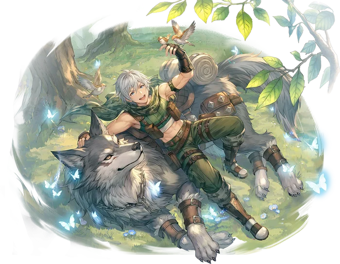

Third tier
Ranger
Ranger is the alternative advancement option for Hunters. While it provides some support for Marksman and Falcon builds from the Hunter, it focuses most of its efforts on the trapping style of combat, preferring to best their enemies through careful planning and preparation, creating a battlefield that gives them every advantage possible.
Hawk Rush and Gale Storm provide options for Rangers that prefer to use their bow, granting an additional stream of damage on autoattacks and a wide ranging AoE respectively. They also gain access to Punishing Bolt, a single target ability that does massive damage based on what Statuses the target is suffering from.
However, the core of the job is undoubtedly its trap skills. Advanced Trap Mastery allows the user to set all traps, including previous Hunter traps, at extended ranges. In addition, they gain access to a new set of traps that persistently deal damage over time to all enemies in the area around them, scaling up with the user's Status Damage.
Finally, Rangers gain access to a suite of skills known as Nature Rituals. Though burdened with extreme cast times, these Rituals massively alter the environment around the user, greatly altering the effectiveness of different elemental properties of both allies and enemies, and granting additional unique effects. The enormous cast times of these Rituals are offset by the core skill, Ritual Mastery, which both decreases the Cast Time of the Rituals and enhances their effects.

Skill list
Skills
Grouped the way the tree is grouped. Names, types and level caps come from the player wiki, so they match what you see in game.
Marksman Skills3 skills
-
Hawk RushPhysicalLv 10
Falcon strike that auto-triggers on bow attacks.
Commands the falcon in a joint maneuver, ordering to to strike the target while granting the user a short boost boost to their Attack Speed. Whenever the user performs a basic attack with a bow, this skill has a chance to trigger at half damage.
-
Punishing BoltPhysicalLv 10
Consumes the target's damaging statuses for a huge single hit.
The user fires an arrow to take advantage of the opponent's Statuses. If the target is suffering from any of Bleeding, Burning, or Poison, they are consumed to amplify the damage dealt.
-
Gale StormPhysicalLv 10
Wide AoE arrow rain that inflicts Slow.
The user fires a hail of enchanted arrows, raining them down on a wide area together with a vicious wind. Enemies struck have a chance of being Slowed.
Trap Skills5 skills
-
Advanced Trap MasteryPassiveLv 10
Extends trap duration and placement range.
Training in the advanced deployment of traps. Increases the duration of Ranger traps, and increases the range at which all traps can be placed.
-
Wind TrapTrapLv 5
DoT trap that inflicts Slow, scaling with Slow Potency.
The user sets a persistent trap that deals Wind property damage to all enemies around it at regular intervals. Enemies struck have a chance of being Slowed. The damage of this trap is increased by the user's Slow Potency.
-
Flame TrapTrapLv 5
DoT trap treated as Burning Damage.
The user sets a persistent trap that deals Fire property damage to all enemies around it at regular intervals. Has a chance of inflicting the Burning status on all enemies struck. The damage dealt by this trap is treated as Burning Damage.
-
Stone TrapTrapLv 5
DoT trap that inflicts Internal Bleeding.
The user sets a persistent trap that deals Earth property damage to all enemies around it at regular intervals. Has a chance of inflicting Internal Bleeding on all enemies struck. The damage dealt by this trap is treated as Bleeding Damage.
-
Venom TrapTrapLv 5
DoT trap treated as Poison Damage.
The user sets a persistent trap that deals Poison property damage to all enemies around it at regular intervals. Has a chance to inflict the Poison status on all enemies struck. The damage dealt by this trap is treated as Poison damage.
Nature Rituals5 skills
-
Ritual MasteryPassiveLv 10
Reduces Ritual cast times and empowers their effects.
Mastery in performing rituals to call on the aid of the spirits of nature. Each level reduces the cast time of Nature Rituals cast by the user. A Nature Ritual that is already active can be recast instantly.
-
Roaring WindsNature RitualLv 5
Wind up, Water down; raises Max ASPD.
Performs a ritual to call on the spirits of spring, ushering in a tremendous windstorm. The user gains an aura that increases the Wind Damage dealt and reduces the Water Damage dealt to all allies and enemies within range. In addition, players in range gain increased Max ASPD. Only one Nature Ritual can be active at a time.
-
Blazing HeatNature RitualLv 5
Fire up, Earth down; raises Crit Rate.
Performs a ritual to call on the spirits of summer, ushering in intense heat. The user gains an aura that increases Fire Damage and reduces Earth Damage taken by all creatures within range. In addition, players in range gain increased Crit Rate. Only one Nature Ritual can be active at a time.
-
Eternal DecayNature RitualLv 5
Earth up, Wind down; amplifies status damage taken.
Performs a ritual to call on the spirits of autumn, ushering in the collapse and decay of the natural world. The user gains an aura that increases the Earth damage and reduces the Wind damage taken by all creatures within its range. In addition, players in range gain increased Bleeding, Burning, and Poison damage. Only one Nature Ritual can be active at a time.
-
Glacial ChillNature RitualLv 5
Water up, Fire down; grants Def/MDef Pierce.
Performs a ritual to call on the spirits of winter, ushering in frigid calm and hibernation. The user gains an aura that increases the Water Damage and decreases the Fire Damage taken by all creatures within its range. In addition, players in range gain increased Defense and Magic Defense Pierce. Only one Nature Ritual can be active at a time.
From the players
See it played
No videos for this class yet. Record your gameplay and post it in the Discord.
Come find out what changed
Make an account, grab the client, and come and see what changed.